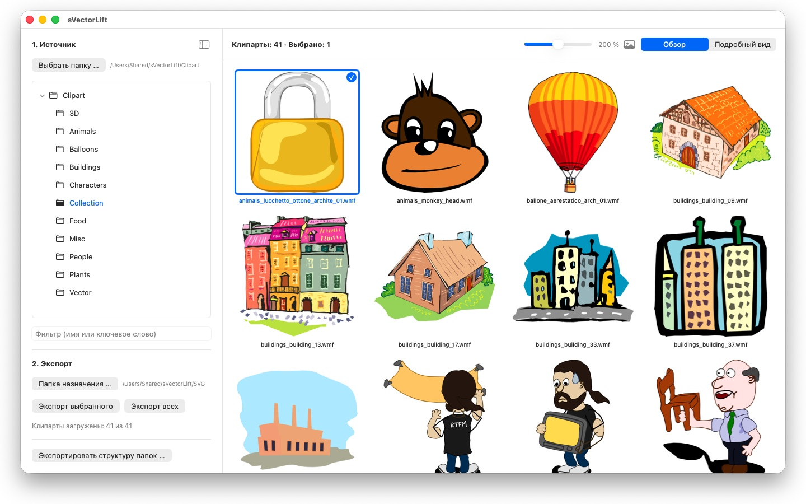
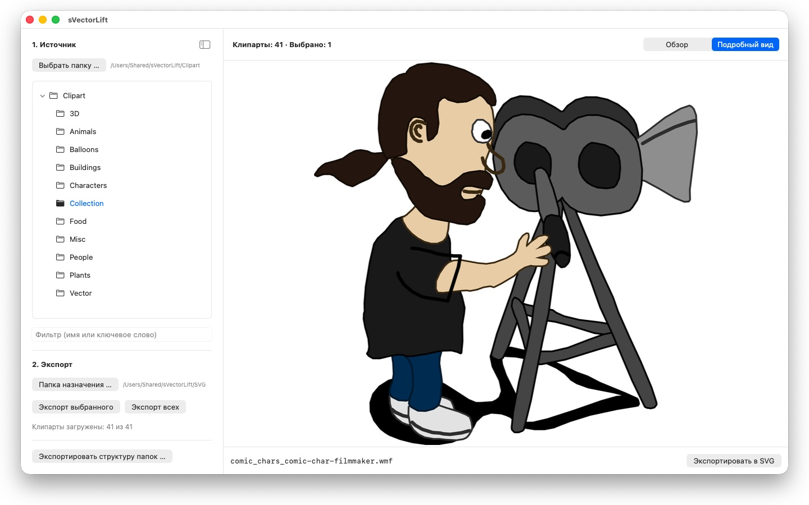

Тысячи клипартов на старых дисках CorelDRAW заперты в форматах, которые никто уже не открывает. sVectorLift превращает их в графику для сегодняшней работы.



Где-то на полке лежит диск с клипартом, купленный много лет назад. Файлы на месте — но ни одна программа на вашем Mac их не открывает.
24 языка: Deutsch · English · Español · Français · Italiano · Nederlands · Português · Svenska · Norsk · Suomi · Polski · Čeština · Hrvatski · Magyar · Română · Türkçe · Русский · Українська · فارسی · ไทย · 日本語 · 한국어 · 简体中文 · 繁體中文
sVectorLift возвращает эту графику в работу. Он заново собирает каждый рисунок как настоящий SVG: чёткий в любом размере, редактируемый, готовый к работе в Illustrator, Affinity, Inkscape, Sketch, Figma — или на вашем сайте. Не просто чтобы снова смотреть. Чтобы снова работать. Именно это значит «lift» в названии: старая векторная графика, поднятая до уровня сегодняшних инструментов.
ЧТО ОН ОТКРЫВАЕТ
- Документы CorelDRAW (.cdr), версии с 6 по 9
- Corel Binary Meta File (.cmx) — включая старый вариант CDRX, который другие программы читать отказываются
- Windows Metafile (.wmf)
- Computer Graphics Metafile (.cgm)
- QuickDraw 3D Metafile (.3dm, .3dmf) — отрисовываются как изображение
- Scalable Vector Graphics (.svg) — показываются напрямую
Многие файлы с расширением .cdr на самом деле вовсе не документы CorelDRAW, а CMX — именно на этом и спотыкаются обычные конвертеры. sVectorLift читает и то, и другое.
sVectorLift сделан для коллекций клипарта: рисунки, символы, иллюстрации. Это не программа вёрстки, и она не берётся воспроизводить многостраничные буклеты и макеты для печати.
НАСТОЯЩЕЕ ВЕКТОРНОЕ ПРЕОБРАЗОВАНИЕ
Здесь не переснимают миниатюру предпросмотра. sVectorLift читает сам рисунок: контуры и кривые Безье, заливки, градиенты, обводки и штриховые линии, узорные и текстурные заливки, встроенные фотографии и текстовые объекты. На выходе — подлинные векторные данные, которые можно масштабировать, перекрашивать и править, а не картинка рисунка.
Чисто растровые изображения экспортируются как PNG, чтобы ничего не потерялось.
Нужно изображение вместо векторной графики? «Экспортировать в PNG» и «Экспортировать в JPG» превращают любой рисунок в изображение, включая файлы SVG, — в размере, который вы задали в окне «Настройки».
ПРОСМОТР КОЛЛЕКЦИИ
- Дерево папок по всей коллекции, вместе с вложенными папками
- Сетка чётких векторных миниатюр с плавной регулировкой размера
- Детальный просмотр, листание папки стрелками
- Фильтр по имени или ключевому слову
- Множественный выбор как в «Фото»: клик, ⌘-клик, ⇧-клик, рамка выделения, ⌘A
- Открытие отдельного файла прямо из Finder («Открыть в программе» или двойной клик)
- Недавние папки помнят, где вы остановились: вложенную папку и выбранный файл
- Экспорт выбранного или всей папки за один шаг
- Преобразование целых структур папок вместе с вложенными папками за один раз — структура сохраняется в папке назначения
- Переименование, показ в Finder, перемещение в Корзину
БЫСТРО И БЕРЕЖНО К ВАШЕМУ MAC
Миниатюры считаются только для того, что вы действительно видите, — в фоне и с кэшем. Большие папки открываются сразу, а не замирают на минуты, обрабатывая тысячи файлов.
Всё остаётся на вашем Mac. Никаких сетевых соединений, никаких учётных записей, никакого сбора данных.
CorelDRAW — товарный знак Corel Corporation. sVectorLift — независимая программа, не связанная с Corel и не одобренная ею.
- Требуется macOS 14 или новее
- 24 языка
- Поддержка: SwiftAppsBavaria@gmx.net
Другие приложения
sCollect
Упорядочивание музыки, фильмов, аудиокниг, электронных книг и других коллекций в медиатеке.
sCollectPlay
Проигрыватель для медиатеки: воспроизведение музыки, фильмов, аудиокниг и подкастов просто из папки, файла iTunes XML или медиатеки sCollect.
sCollectPlay Lite
Облегчённая версия sCollectPlay: просто откройте папку, файл iTunes XML или медиатеку sCollect и воспроизводите из них музыку, фильмы, аудиокниги и подкасты — со списками воспроизведения, звуковыми дорожками и дорожками субтитров, замедленным воспроизведением и покадровым переходом. Одновременно открыт только один источник. Браузер по столбцам, собственные списки воспроизведения и список недавно использованных источников доступны только в полной версии.
sName2Date
Запись даты из имени файла как даты съёмки в фотографии, фильмы и аудиозаписи — чтобы файл вроде IMG_20240115_103000.jpg правильно сортировался в любой программе для управления фотографиями.
sName2Date Lite
Версия для одного файла за проход: запись даты из имени файла как даты съёмки в фотографию, фильм или аудиозапись, ручная установка даты, приведение имени к формату ISO и отмена всего сочетанием ⌘Z — те же возможности, что и у sName2Date, только без целых папок.
SwiftRename
С карты памяти в архив: переименование фото и видео по времени съёмки, раскладка по папкам годов, месяцев или дней, поиск дубликатов — в том числе RAW.
sBikeBridge
Анализ велопоездок без загрузки на какой-либо портал: чтение файлов FIT с любого велокомпьютера, который записывает в этом формате, а также GPX и TCX. Поездки хранятся в собственной библиотеке на Mac — с картой, мощностью и пульсом, фотографиями и заметками; дубликаты распознаются при импорте. Показатели по годам или месяцам и фильтры по дистанции, набору высоты и продолжительности позволяют сравнивать поездки. По желанию карта доступна и офлайн.